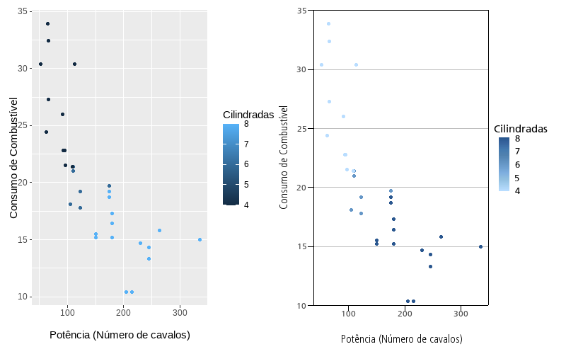

O ipeaplot é um pacote em R desenvolvido para facilitar a padronização de gráficos e figuras seguindo a política editorial do Instituto de Pesquisa Econômica Aplicada (Ipea). O pacote traz algumas funções que facilitam o ajuste de formatação e de cores de gráficos criados com o pacote ggplot2, garantindo a conformidade com as diretrizes das publicações do Instituto.
Instalação
Você pode instalar o ipeaplot direto CRAN:
# CRAN
install.packages("ipeaplot")A versão em desenvolvimento está disponível no GitHub:
# Versão em desenvolvimento (0.3.1.9000)
utils::remove.packages('ipeaplot')
remotes::install_github("ipeadata-lab/ipeaplot")Visão geral do pacote
O pacote ipeaplot foi desenhado para ser usado em conjunto com o pacote ggplot2, a biblioteca mais popular de visualização de dados em R. Atualmente, o ipeaplot inclui três funções principais:
-
theme_ipea()- para formatação de elementos estilísticos da figura (eixos, fontes, linhas, grid, etc.); -
scale_color_ipea()escale_fill_ipea()- selecionam paleta de cores dentro de um conjunto de opções utilizadas pelo Ipea; -
save_eps()- salva a figura com a extensão.eps, um formato vetorial de alta resolução utilizado pela equipe da Coordenação do Editorial.
Demonstração do pacote
# Carregue os pacotes
library(ipeaplot)
library(ggplot2)No painel abaixo, à direita, temos a representação de um gráfico no formato padrão do ggplot2. Já à esquerda, destacamos o resultado obtido após a aplicação de linhas de código com as funções theme_ipea() e scale_color_ipea().
# Figura ggplot original
fig_raw <- ggplot(data = mtcars, aes(x = hp , y = mpg, color = cyl)) +
geom_point() +
labs(y='Consumo de Combustível',
x ='Potência (Número de cavalos)',
color='Cilindradas')
# Adicionando os padrões do Ipea
fig_raw +
scale_color_ipea() +
theme_ipea()
Mais detalhes sobre a utilização do ipeaplot nas vinhetas:
Equipe

O pacote ipeaplot é desenvolvido pela equipe da Coordenação-Geral de Ciência de Dados e Tecnologia da Informação (CGDTI) do Instituto de Pesquisa Econômica Aplicada (Ipea).
Outros pacotes semelhantes
- UNHCR’s unhcrthemes
- BBC’s bbplot